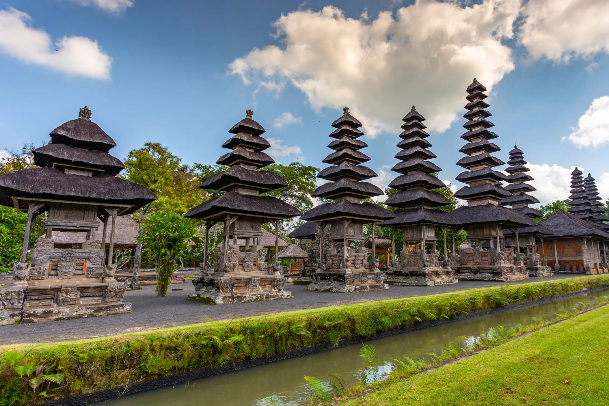

EXPLORE
Discover Amazing Places
Join us on a journey around the world to explore hidden gems, iconic landmarks, and breathtaking destinations.

Indonesia
Explore the beautiful beaches and rich culture of Bali, Indonesia.
Japan
Discover the vibrant city life and historical landmarks of Tokyo, Japan.
Swiss
Experience the stunning landscapes and natural beauty of the Swiss Alps.